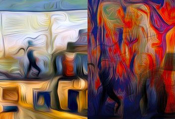

by Hulki Okan Tabak · Async Art Master #3509 · day/night · time rule: UTC
Updates twice a day to reflect day / night cycles.

Day 06:00–18:59 · Night 19:00–05:59 (UTC)
The full-size files live on IPFS; each is linked on three public gateways, in the order to try them (gateway.pinata.cloud, ipfs.io, dweb.link). Every line says what our own check found: 3 not pinned by us yet, 1 our own copy, pinned here and verified on upload.
QmVXRk86Zu7J8H… gateway.pinata.cloud · ipfs.io · dweb.link — not pinned by us yet, checked 2026-09-23 09:13QmcefYWXFv5xkq… gateway.pinata.cloud · ipfs.io · dweb.link — not pinned by us yet, checked 2026-09-23 09:13bafybeiaf3lopt… gateway.pinata.cloud · ipfs.io · dweb.link — our own copy, pinned here and verified on upload, checked 2026-09-22Qme5KmUeugs8B1… gateway.pinata.cloud · ipfs.io · dweb.link — not pinned by us yet, checked 2026-09-23 09:13QmVXRk86Zu7J8H… gateway.pinata.cloud · ipfs.io · dweb.link — not pinned by us yet, checked 2026-09-23 09:13QmVXRk86Zu7J8H… gateway.pinata.cloud · ipfs.io · dweb.link — not pinned by us yet, checked 2026-09-23 09:13QmcefYWXFv5xkq… gateway.pinata.cloud · ipfs.io · dweb.link — not pinned by us yet, checked 2026-09-23 09:13"...were we led all that way for Birth or Death? There was a Birth, certainly, We had evidence and no doubt. I had seen birth and death, But had thought they were different; this Birth was Hard and bitter agony for us, like Death, our death. We returned to our places, these Kingdoms, But no longer at ease here, in the old dispensation, With an alien people clutching their gods. I should be glad of another death." --from Journey of the Magi by T.S.Eliot ... The Undertaker is a work loosely inspired by Felix Nussbaum's work. It is a piece about facing loss and trying to make peace with it. by Hulki Okan Tabak September 2021 Minted on Async Art
async.art · OpenSea · Etherscan
Generated archive pages. Content identifiers point to the public IPFS network.